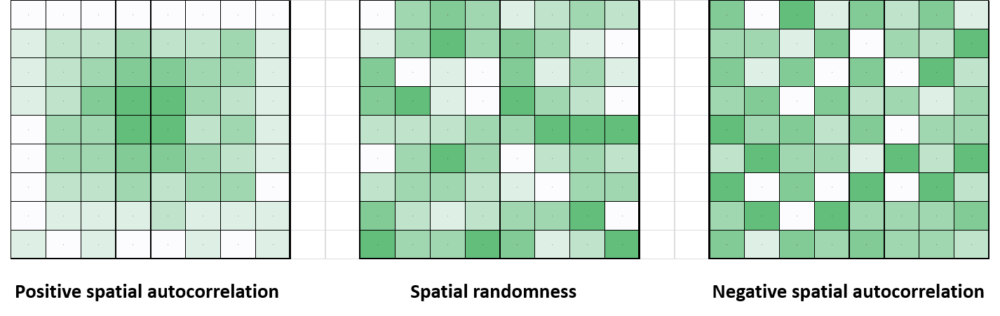
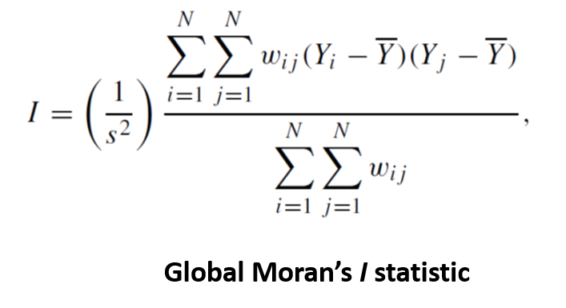
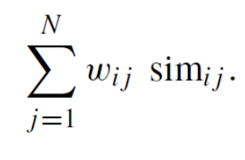
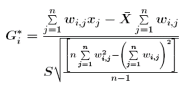

Chapter 3 Technical details
Here, technical/statistical details and references are provided for the core functions in geode.
3.1 geo_import()
This function imports spatial or attribute data from an existing source file. Spatial files must be valid shapefiles (.shp), whereas attribute files can be any georeferenced data from a standard comma separate values (.csv) file.
Importation of shapefiles makes use of the st_read() function from the sf package. Simplification of shapefiles during import (simplify = TRUE) removes vertices, resulting is smaller but less detailed geographic boundaries. Boundaries are simplified to a level of 1000 m. This is useful for generating more manageable working files for experimental use. Although the process attempts to preserve topology, caution is needed as simplification can affect geographic calculations.
Checking the validity of each geometry (validity_check = TRUE) during import generates an output list indicating any invalid geometries and the reason(s) for invalidity. Additional information can be found in:
https://geocompr.robinlovelace.net/geometric-operations.html
In principle, invalid geometries can be corrected using the st_make_valid function from the sf package. For more information, see
https://r-spatial.github.io/sf/reference/valid.html
Importation of csv files makes use of the read_csv() function from the readr package, including standard default options.
3.2 geo_plot()
This function creates static or interactive maps from geospatial and attribute data.
Choropleth mapping makes use of the functionality from the tmap package. Point- and heat-maps make use of the mapping functionality from the ggplot2 package.
Note that for point-maps and heat-maps, the coordinate reference system (CRS) for the attribute data is automatically transformed to match that of input geographic data. If CRS is missing for the attribute data, it is assumed to be WGS84.
For choropleth maps, user-defined output styles (e.g. colour palettes) can be created following the examples shown in tmap_options() (see ?tmap::tmap_options). For illustrative purpose, a selection of styles are included based on the colour palettes of the wesanderson R package (zissou, royal, darjeeling, and fantasticfox). If the style= option is omitted from geo_plot(), the output plot will use the default style for the particular plot_type.
3.3 geo_distance()
This function calculates and maps proximity metrics based on known point locations and geographic units.
Proximity may be measured in a variety of ways. The methodology used in the geo_distance() function examines proximity relative to user-specified point locations. Given input data on a set of geographic units (e.g., census regions, health regions, etc.) and the point locations of places or events of interest, the function calculates the centroid of each geographic unit and the pairwise distances to all point locations of interest. Proximity for each geographic unit is then calculated as the average distance to the n nearest locations.
The coordinate reference system (CRS) for the point location data is automatically transformed to match that of the input geographic data. If CRS is missing for the location data, it is assumed to be WGS84.
The plotting of proximity metrics makes use of the functionality in the ggplot2 package.
3.4 geo_detect()
This function helps to identify regions that form an unusual spatial aggregation of events.
Public health data are often available by administrative regions, for example health regions, census geographies, postal code areas, etc. The geo_detect() function focuses on detection of clusters in data organized and aggregated into such administrative regions. The function makes use of event counts and corresponding population sizes provided by the user, for calculation of rates (events/population), and compares the observed value for a region against the expected value (as calculated, or as provided by the user) to determine significant clusters.
The Kulldorff cluster detection method is used, which creates groupings of regions by consecutively aggregating nearest-neighbour areas until a set proportion of the total population is reached. The number of cases or events in the aggregation is used to calculate the likelihood based on either a binomial or poisson model. The final output of this method is the group of neighbouring regions that is the most likely cluster, and any secondary clusters, with a significance measure based on Monte Carlo sampling.
The Kulldoff method can use either a binomial model (does not use expected counts) or a Poisson model (uses expected event counts provided by the user or calculated automatically). Both methods require i) geometry data (coordinates of each region’s centroid), ii) the observed event counts by region, and iii) the population size to use for each region.
Note that population sizes that are very small (or zero), or very rare events, can result in a calculation error that halts the cluster detection algorithm. In these cases, users may wish to utilize the Poisson model, which is less sensitive to small counts. Alternatively, users can replace small population sizes with slightly larger values in order to allow the calculations to proceed. However, care should be taken that replacing small population sizes does not result in biased or erroneous results.
For both binomial and Poisson methods, the geo_detect() function specifies that a cluster can contain up to a maximum of 10% of the population size. Monte Carlo samples (N = 999) are generated for calculation of p-values and an alpha level of 0.05 is used for determining statistical significance. The output reports the single most likely cluster based on the calculated significance values, and any secondary clusters meeting the specified significance threshold. If a map output is requested, the primary and top two secondary clusters are plotted.
Further information on the Kulldorff cluster detection method used here can be found in the documentation for the SpatialEpi package at http://faculty.washington.edu/jonno/SISMIDmaterial/SpatialEpiVignette.pdf
It is important to recognize that statistical clusters of events may or may not be relevant to public health – the definition of a cluster must be determined on a case by case basis. Also, note that statistical considerations, including corrections for multiple comparisons, need to be examined carefully when performing cluster detection.
When interpreting the output of this function, it is important to consider the standard cautions and limitations of cluster detection, including ecologic fallacy, modifiable areal unit problem (MAUP), and the trade-off between resolution and sample size.
3.5 geo_calculate()
This function helps to measure if and how much events are aggregated in space across an area of interest. Two measures of spatial autocorrelation are used:
global spatial autocorrelation - a measure of clustering used to describe spatial patterns of events across an entire study area
local spatial autocorrelation – a measure for detection of clusters that indicates each region’s similarity (in event frequency) to its neighbouring regions
3.5.1 global spatial autocorrelation
The calculation of global spatial autocorrelation is the cross-product of two matrices: i) values of similarity (in event counts) between each pair of regions; and ii) values indicating proximity (distance, neighbouring, etc.) between each pair of regions. High cross-product values (similar regions are close together) indicate positive spatial autocorrelation and small values (dissimilar regions are close together) indicate negative spatial autocorrelation.

The geo_calculate function uses a standard measure of global spatial autocorrelation, Moran’s I, which is a spatially weighted version of the standard Pearson’s correlation coefficient. See the moran.mc() function from the spdep package for further details.

Moran’s I values may be negative or positive, indicating negative or positive spatial autocorrelation, respectively. This function defines spatial neighbours using the poly2nb() function from the spdep package and rook adjacency rules. Further, it is specified that neighbour weights must sum to 1.0 for each geographic region (style = “W”) and that regions with no neighbours are ignored.
Visualization of the global autocorrelation statistic can be done in the geo_calculate() function by generating a Moran’s I scatterplot (plot = TRUE).
3.5.2 local spatial autocorrelation
Note that global autocorrelation does not detect clusters per se, so geo_calculate() also utilizes a local measure of spatial autocorrelation to assist with finding aggregations of events and mapping of ‘hotspots’ and ‘coldspots.’
As with global spatial autocorrelation, calculation of local autocorrelation uses similarity between a region and its neighbours, weighted by proximity of those neighbours. Generically, this may be expressed as:

The geo_calculate() function uses a standard measure of location spatial autocorrelation, the local Getis-Ord Gi statistic.

In the calculation of this statistic, the function uses the same approach for determining neighbouring regions and the spatial weights matrix as describe above for global spatial autocorrelation.
Visualization of hot- and cold-spots based on the local Getis-Ord statistic can be done by generating a map in the geo_calculate function. The distribution of the calculated Gi values is used to define breaks points according to standard z-scores for levels of significance (99%, 95%, 90% CIs). These breakpoints are then mapped as hot- or cold-spots at the appropriate significance level.
It should be noted that that there are a number of challenges in determining statistical significance for local measures of spatial autocorrelation, including appropriate test distributions and problems associated with multiple (regional) testing. Further discussion of these issues can be found in Waller and Gotway, 2004 (Chapter 7).
3.6 geo_export()
This function exports spatial and attribute data to file. The output file type can be a shapefile (.shp), comma separated value file (.csv), Excel workbook (.xlsx), or a SAS data file (.sas7bdat).
Exporting to a shapefile makes use of the functionality in the sf package. Exporting to a csv file makes use of the functionality in the readr package. Exporting to a SAS file makes use of the functionality in the haven package. Exporting to EXCEL makes use of the functionality in the xlsx package. Further details can be found in the documentation for these packages (see https://cran.r-project.org/web/packages/available_packages_by_name.html).
Generic missing values (i.e., empty cells: "" and cells with a single empty space: " ") and properly coded missing values (NA) are by default converted to the character string ‘NA’ in the output dataset. Alternatively, a user-specified character string can be used instead of ‘NA’ in the output dataset (using the na = option).